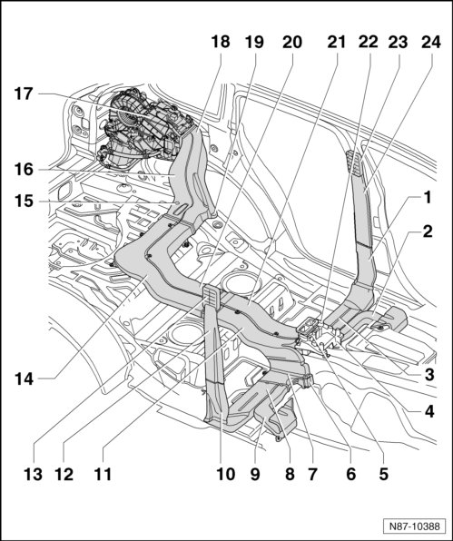

4 Zone Climatronic Components and Air Ducts
4 Zone Climatronic Components and Air Ducts
• After completion of repairs, perform the following work. Perform basic setting, refer to--> [ Climatronic A/C System with Automatic Control, Checking and Adjusting ] Climatronic A/C System with Automatic Control, Checking and Adjusting.

1 B-pillar air channel, left
• Removing and installing
- Front seat, removing.
- Left B-pillar trim, removing.
- Lift carpet and remove 2 air channel nuts (2 Nm).
2 Footwell air channel, left
• Removing and installing
- Front seat, removing.
- Lift the carpet and remove the air duct bolt (2 Nm).
3 Left air duct
• Connection to the B-pillar air duct
• Removing and installing
- Front seat, removing.
- Lift the carpet and unclip the air duct.
4 Left B-Pillar/Footwell Shut-Off Door Motor (V212)
• Removing and installing
- Front seat, removing.
- Remove center console.
- Lift carpet and remove screws at Left B-Pillar/Footwell Shut-Off Door Motor (V212).
5 Right Rear Upper Body Vent Motor (V316)
• Removing and installing
- Remove center console.
- Remove screws at Right Rear Upper Body Vent Motor (V316).
6 Right B-Pillar/Footwell Shut-Off Door Motor (V211)
• Removing and installing
- Front seat, removing.
- Remove center console.
- Lift carpet and remove screws at Right B-Pillar/Footwell Shut-Off Door Motor (V211).
7 Air channel with shut-off door, B-pillar and right footwell
• Removing and installing
- Front seat, removing.
- Lift carpet and remove 2 nuts (2 Nm) at air channel.
8 Right air duct
• Connection to the B-pillar air duct
• Removing and installing
- Front seat, removing.
- Lift the carpet and unclip the air duct.
9 Footwell air channel, right
• Removing and installing
- Front seat, removing.
- Lift the carpet and remove the air duct bolt (2 Nm).
10 B-pillar air channel, right
• Removing and installing
- Front seat, removing.
- Right B-pillar trim, removing.
- Lift carpet and remove 2 air channel nuts (2 Nm).
11 Air channel, right
• Removing and installing
- Bench seat and rear backrests, removing.
- Lift the carpet and remove the air duct bolt (1.4 Nm).
12 B-pillar air channel, right
• Removing and installing
- Front seat, removing.
- Right B-pillar trim, removing.
13 B-pillar vent, right
• Removing and installing
- Front seat, removing.
- Right B-pillar trim, removing
14 Air channel, right
• Removing and installing
- Bench seat and rear backrests and cargo floor, removing.
- Lift carpet and remove 3 screws (2 Nm) at air channel.
15 Right Rear Vent Temperature Sensor (G406)
• Removing and installing, refer to--> [ Right Rear Vent ] Right Rear Vent
16 Air channel, right
• Removing and installing
- Remove the luggage compartment left side trim.
17 2nd heating and air conditioning unit
• Removing and installing, refer to --> [ Second Rear Heating and A/C Unit ] Second Rear Heating and A/C Unit
• 2nd heating and air conditioning unit, bringing into service position --> [ Second Rear Heating and A/C Unit, Service Position ] Second Rear Heating and A/C Unit, Service Position
18 Air channel, left
• Removing and installing
- Remove the luggage compartment left side trim.
19 Left Rear Vent Temperature Sensor (G405)
• Removing and installing, refer to --> [ Left Rear Vent ] Left Rear Vent
20 Air channel, left
• Removing and installing
- Bench seat and rear backrests and cargo floor, removing.
- Lift carpet and remove 2 screws (1.4 Nm) and 1 nut (2 Nm) at air channel.
21 Air channel, left
• Removing and installing
- Bench seat and rear backrests, removing.
- Lift carpet and remove screw (1.4 Nm) at air channel.
22 Left Rear Upper Body Vent Motor (V315)
• Removing and installing
- Remove center console.
- Remove screws at Left Rear Upper Body Vent Motor (V315).
23 B-pillar vent, left
• Removing and installing
- Front seat, removing and installing.
- Left B-pillar trim Removal.
24 B-pillar air channel, left
• Removing and installing
- Front seat, removing.
- Left B-pillar trim.